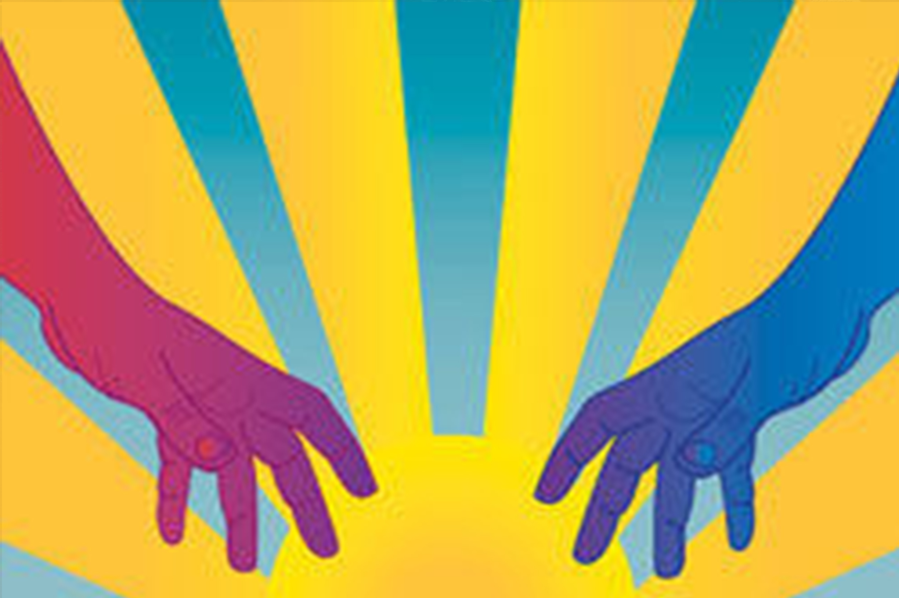

Whether we seek to address issues of governance, religion,
race, the environment, economic development, education, or
community health, the inability to communicate and cooperate
in creative ways erodes social capital and weakens our ability to
draw on diverse skill sets to address common challenges and
respond to community opportunities.
Please join us in creating a professional development and
showcase opportunity for community engaged scholars and
designers and their community partners from all walks of life
to learn more about integrating design, dialogue, and deliberation.
These practices bridge divides between experts and the rest of us,
as well as disciplinary silos between the arts and humanities and
social sciences.
TRANSDISCIPLINARY CONFERENCE AT WVU MARCH 28-30, 2019
Join us in integrating design, dialogue, and deliberation toward solving
wicked community problems and leveraging asset-based opportunities!
MEET OUR
KEYNOTE SPEAKERS
JOIN OUR
DESIGNER WORKSHOPS
SEE OUR
SHOW CASES
CREATE YOUR
DIPTYCH BANNERS

WHAT'S NEXT?
Cocreating an event that will be fun, and disarming while grappling
with challenging social, political, economic, and environmental issues!